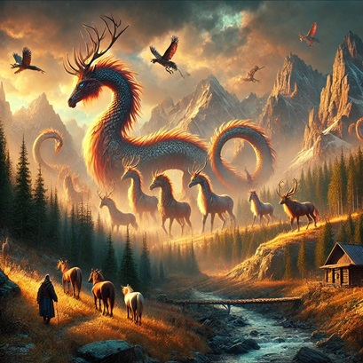

4. Пейзаждың негізгі түрлері
Пейзаждың негізгі түрлері:
- Табиғи пейзаж – табиғат көріністері (орман, тау, өзен, дала және т.б.).
- Қалалық (урбанистік) пейзаж – қала көріністері (ғимараттар, көшелер, көпірлер).
- Ауылдық пейзаж – ауыл көріністері (үйшіктер, егін алқаптары, малшылар).
- Теңіз (маринистік) пейзаж – теңіз, мұхит, жағалаулар бейнеленген көріністер.
- Фантастикалық пейзаж – қиял-ғажайып жерлер (ойдан шығарылған табиғат немесе ғарыш көріністері).
